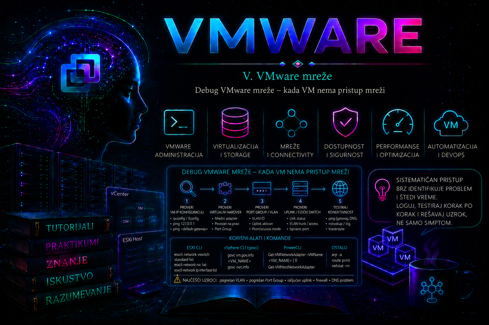

VMware

Mrežni problem virtuelne mašine može nastati na više međusobno povezanih slojeva: u operativnom sistemu gosta, konfiguraciji virtuelnog adaptera, port grupi, VLAN-u, virtuelnom switchu, NIC teaming politici, fizičkom uplinku, fizičkom switchu, gateway-u, DNS-u ili firewall-u. Zbog toga se VMware mreža ne dijagnostikuje nasumičnim menjanjem podešavanja, već praćenjem kompletnog puta paketa od izvora do odredišta.
Najvažniji cilj dijagnostike jeste da se utvrdi poslednja tačka na kojoj je saobraćaj sigurno prisutan i prva tačka na kojoj nestaje. Kada se granica problema precizno odredi, broj mogućih uzroka brzo se smanjuje.
Osnovni put paketa virtuelne mašine izgleda ovako:
Proces u gostujućem operativnom sistemu
|
IP konfiguracija, ruta i lokalni firewall
|
Virtuelni mrežni adapter – vNIC
|
VMware virtuelni port
|
Port Group
|
VLAN i bezbednosne politike
|
vSphere Standard ili Distributed Switch
|
NIC teaming i izabrani uplink
|
Fizički adapter – vmnic
|
Fizički switch port
|
Gateway, firewall, ruter ili udaljeno odredište
Kod komunikacije između dve virtuelne mašine na istom ESXi hostu paket može ostati unutar virtuelnog switcha. Kod komunikacije sa drugim hostom ili fizičkim uređajem mora da prođe kroz fizički uplink i fizičku mrežu.
Model incidenta: simptom, obim, posledica i uzrok
Pre tehničke provere incident treba opisati tako da se ne pomešaju simptom i uzrok. Simptom je, na primer, „aplikacija nije dostupna”; obim govori da li je pogođena jedna VM, port grupa, host, klaster ili samo jedan VMkernel servis; posledica opisuje poslovni uticaj; neposredni tehnički uzrok može biti pogrešan VLAN ili neaktivan uplink, dok osnovni uzrok može biti nedovoljna kontrola promene ili neusaglašena konfiguracija hostova. Privremeno zaobilazno rešenje, kao što je migracija VM-a na funkcionalan host, ne sme se evidentirati kao trajna korektivna mera.
Lekcija koristi komande dostupne u savremenim izdanjima ESXi 7.x i 8.x i aktuelnom VCF PowerCLI-ju. Tačan izlaz, naziv modula i raspoložive opcije mogu se razlikovati prema ESXi build-u, tipu switcha i privilegijama. esxcli, esxtop, vmkping i pktcap-uw izvršavaju se u ESXi Shell-u ili preko SSH-a sa administratorskim pravima; SSH treba omogućiti privremeno, u skladu sa bezbednosnom politikom. PowerCLI read-only inventar zahteva najmanje privilegije za pregled, dok cmdlet-i Set-* menjaju stanje i zahtevaju odobrenu promenu. Distribuirani switch zahteva odgovarajuće vSphere izdanje/licencu; gde su navedene standard-switch komande, ekvivalentna vDS provera obavlja se u vSphere Client-u ili VCF PowerCLI-ju.
Početna pitanja pre dijagnostike
Pre pokretanja komandi potrebno je precizno opisati problem:
- Da li VM uopšte ima IP adresu?
- Da li problem pogađa jednu VM ili sve VM na port grupi?
- Da li VM može da pristupi svom gateway-u?
- Da li komunikacija radi samo sa VM-ovima na istom hostu?
- Da li pristup po IP adresi radi, a po imenu ne radi?
- Da li je problem nastao posle vMotion migracije?
- Da li je menjana port grupa, VLAN ili fizički switch?
- Da li su pogođeni samo veliki paketi?
- Da li problem utiče na VM saobraćaj ili na VMkernel servis?
- Da li je problem stalan ili povremen?
Precizna razlika između ovih simptoma usmerava dijagnostiku na odgovarajući sloj.
Osnovni redosled mrežne dijagnostike
- Potvrditi stanje virtuelne mašine i njenog mrežnog adaptera.
- Proveriti IP adresu, masku, gateway, rute i DNS unutar gosta.
- Testirati lokalni TCP/IP stek i sopstvenu IP adresu.
- Testirati gateway i udaljenu IP adresu.
- Odvojeno testirati DNS rezoluciju.
- Proveriti port grupu i VLAN ID.
- Proveriti virtuelni switch, teaming i fizičke uplinkove.
- Proveriti stanje fizičkog adaptera i brojače grešaka.
- Uporediti problematičnu VM sa funkcionalnom VM.
- Pratiti port i uplink pomoću ESXCLI-ja i esxtop-a.
- Po potrebi izvršiti packet capture.
- Tek nakon utvrđenog uzroka menjati konfiguraciju.
Prvo odrediti obim problema
Obim problema često odmah ukazuje na sloj na kojem treba tražiti uzrok.
| Simptom | Verovatni sloj problema |
|---|---|
| Samo jedna VM nema mrežu | vNIC, guest IP konfiguracija, firewall, duplikat IP adrese ili drajver |
| Sve VM na jednoj port grupi nemaju mrežu | Port grupa, VLAN, teaming ili fizički trunk |
| Sve VM na jednom hostu nemaju mrežu | vSwitch, uplink, fizički NIC ili fizički switch port |
| VM radi na jednom hostu, ali ne posle migracije | Nedosledna port grupa, VLAN ili uplink konfiguracija ciljnog hosta |
| IP komunikacija radi, DNS ne radi | DNS server, DNS ruta, firewall ili konfiguracija gosta |
| VM komunicira lokalno, ali ne van hosta | Fizički uplink, VLAN trunk ili gateway |
| Samo veliki paketi ne prolaze | MTU neusaglašenost |
| Komunikacija povremeno nestaje | Teaming, fizički link, packet loss, duplikat IP ili MAC flapping |
Provera stanja virtuelne mašine
Na ESXi hostu prvo pronaći VM i njen VMID:
vim-cmd vmsvc/getallvms
Proveriti power stanje:
vim-cmd vmsvc/power.getstate <VMID>
Primer:
vim-cmd vmsvc/power.getstate 12
Ako VM nije uključena, dalja mrežna dijagnostika aktivnog saobraćaja nema smisla dok se ne reši problem njenog pokretanja.
Provera virtuelnog mrežnog adaptera
U vSphere Client-u proveriti:
- da li VM poseduje očekivani mrežni adapter
- da li je označena opcija Connected
- da li je označena opcija Connect at power on
- da li je izabrana odgovarajuća port grupa
- da li adapter koristi očekivanu MAC adresu
- da li je tip adaptera odgovarajući, najčešće VMXNET3
PowerCLI pregled:
Connect-VIServer vcsa.lab.local
Get-VM "WebServer01" |
Get-NetworkAdapter |
Select-Object Name,
Type,
NetworkName,
MacAddress,
ConnectionState
Detaljan pregled:
Get-VM "WebServer01" |
Get-NetworkAdapter |
Format-List *
Ako adapter nije povezan:
Get-VM "WebServer01" |
Get-NetworkAdapter -Name "Network adapter 1" |
Set-NetworkAdapter `
-Connected:$true `
-StartConnected:$true `
-Confirm:$false
Ova promena ne rešava pogrešan VLAN, IP adresu ili fizičku mrežu. Ona samo potvrđuje da je virtuelni adapter priključen na VMware mrežni port.
Provera konfiguracije unutar Linux gosta
Sažet pregled interfejsa:
ip -br address
Detaljan pregled:
ip address show
ip link show
Pregled ruta:
ip route
Određivanje putanje do odredišta:
ip route get 8.8.8.8
Pregled DNS konfiguracije:
cat /etc/resolv.conf
Na sistemima sa systemd-resolved:
resolvectl status
Pregled NetworkManager konfiguracije:
nmcli device status
nmcli connection show
nmcli device show
Provera drajvera mrežnog adaptera:
ethtool -i ens192
Za VMXNET3 adapter očekuje se odgovarajući VMware mrežni drajver:
driver: vmxnet3
Statistika interfejsa:
ip -s link show ens192
Dodatna statistika, kada je podržana:
ethtool -S ens192
Provera konfiguracije unutar Windows gosta
Pregled kompletne IP konfiguracije:
ipconfig /all
Pregled ruta:
route print
PowerShell pregled adaptera:
Get-NetAdapter |
Format-Table Name,
Status,
LinkSpeed,
MacAddress,
InterfaceDescription
Pregled IP konfiguracije:
Get-NetIPConfiguration
Pregled IP adresa:
Get-NetIPAddress |
Sort-Object InterfaceAlias,
AddressFamily
Pregled ruta:
Get-NetRoute |
Sort-Object DestinationPrefix,
RouteMetric
Ako Windows automatski dobije adresu iz opsega:
169.254.0.0/16
DHCP konfiguracija nije uspešno završena. Tada treba proveriti port grupu, VLAN, fizički trunk, DHCP scope i DHCP relay.
Testiranje lokalnog TCP/IP steka
Linux:
ping -c 4 127.0.0.1
ping -c 4 <sopstvena-IP-adresa>
Windows:
ping 127.0.0.1
ping <sopstvena-IP-adresa>
Ako test prema loopback adresi ne radi, problem je unutar samog operativnog sistema. Ako loopback radi, ali sopstvena IP adresa ne radi, treba proveriti stanje interfejsa, drajver i IP konfiguraciju.
Postepeni test mrežne putanje
Testiranje treba izvoditi od najbliže ka udaljenijoj tački:
- loopback adresa
- sopstvena IP adresa
- druga VM u istoj podmreži
- default gateway
- udaljena IP adresa
- DNS server
- odredište po DNS imenu
- konkretan aplikacioni port
Linux primer:
ping -c 4 127.0.0.1
ping -c 4 10.110.0.21
ping -c 4 10.110.0.22
ping -c 4 10.110.0.1
ping -c 4 8.8.8.8
getent hosts example.com
nc -vz 10.110.0.50 443
Windows primer:
ping 127.0.0.1
ping 10.110.0.21
ping 10.110.0.22
ping 10.110.0.1
ping 8.8.8.8
nslookup example.com
Test-NetConnection 10.110.0.50 -Port 443
Ako ping ne radi, to ne dokazuje automatski da je mreža neispravna. ICMP može biti blokiran. Zato se za aplikacije koristi test konkretnog TCP ili UDP porta.
Provera ARP i neighbor tabele
ARP i neighbor tabela pokazuju da li je gost uspeo da pronađe MAC adresu uređaja u lokalnoj mreži.
Linux:
ip neigh
Windows:
arp -a
Ako gateway ostaje u stanju:
INCOMPLETE
FAILED
ili nema odgovarajući ARP zapis, problem je verovatno na Layer 2 putanji:
- pogrešan VLAN
- pogrešna port grupa
- neaktivan uplink
- VLAN nije dozvoljen na fizičkom trunku
- gateway nije dostupan
- duplikat ili pogrešna IP konfiguracija
Provera duplirane IP adrese
Duplikat IP adrese može izazvati povremenu dostupnost, promene MAC adrese u ARP tabelama i nestabilne konekcije.
Na Linux sistemu:
arping -D -I ens192 10.110.0.21
Ako je adresa već aktivna na mreži, alat može prijaviti odgovor drugog uređaja.
Pregled promene neighbor zapisa:
watch -n 1 ip neigh
Na Windows sistemu može se obrisati ARP cache i ponoviti test:
arp -d *
ping 10.110.0.1
arp -a
U produkciji treba proveriti i DHCP evidenciju, IPAM sistem, fizički switch i MAC address table.
Provera lokalnog firewall-a
Linux sa firewalld:
sudo firewall-cmd --state
sudo firewall-cmd --get-active-zones
sudo firewall-cmd --list-all
Linux sa nftables:
sudo nft list ruleset
Ubuntu sa UFW:
sudo ufw status verbose
Windows:
Get-NetFirewallProfile
Get-NetFirewallRule -Enabled True |
Select-Object -First 20
Firewall ne treba trajno isključivati samo radi testa. Bezbednije je proveriti pravilo za konkretan servis i privremenu izmenu dokumentovati.
Provera servisa i portova
Ako je VM dostupna, ali aplikacija nije, proveriti da li servis radi i da li sluša na očekivanom portu.
Linux:
systemctl status nginx
ss -lntp
ss -lunp
Test lokalnog servisa:
curl -I http://127.0.0.1
curl -vk https://127.0.0.1
Windows:
Get-Service
Get-NetTCPConnection -State Listen
Test lokalnog porta:
Test-NetConnection localhost -Port 443
Ako servis radi lokalno, ali ne i udaljeno, proveravaju se firewall, ruta, port grupa, VLAN i mrežni uređaji između klijenta i servera.
Provera VMware Toolsa
VMware Tools nisu obavezni za osnovnu Ethernet komunikaciju, ali obezbeđuju podatke o gostu i ispravan VMXNET3 drajver u podržanim konfiguracijama.
PowerCLI:
Get-VM "WebServer01" |
Select-Object Name,
PowerState,
@{N='ToolsStatus';E={
$_.ExtensionData.Guest.ToolsStatus
}},
@{N='ToolsVersionStatus';E={
$_.ExtensionData.Guest.ToolsVersionStatus2
}},
@{N='GuestIP';E={
$_.Guest.IPAddress -join ', '
}}
Linux:
systemctl status vmtoolsd
vmware-toolbox-cmd -v
Windows:
Get-Service VMTools
Provera port grupe
Pregled standardnih port grupa:
esxcli network vswitch standard portgroup list
Proveriti:
- da li port grupa postoji
- da li pripada očekivanom vSwitch-u
- da li koristi očekivani VLAN ID
- da li ima aktivne klijente
PowerCLI:
Get-VirtualPortGroup `
-VMHost "esxi01.lab.local" `
-Name "PG-PROD-WEB" |
Select-Object VMHost,
Name,
VirtualSwitchName,
VLanId
Kod Distributed Switch-a:
Get-VDPortgroup -Name "DVPG-PROD-WEB" |
Select-Object Name,
VDSwitch,
NumPorts,
PortBinding
VLAN konfiguracija Distributed Port Group-a:
Get-VDPortgroup -Name "DVPG-PROD-WEB" |
Get-VDVlanConfiguration
Provera VLAN-a
Najčešća VLAN greška nastaje kada VMware i fizička mreža ne očekuju isti način označavanja.
Kod VST modela potrebno je:
- port grupa sa VLAN ID-em između 1 i 4094
- fizički uplink povezan na trunk port
- VLAN dozvoljen na trunku
- odgovarajuća IP podmreža unutar gosta
Kod EST modela:
- port grupa koristi VLAN 0
- fizički port je access port odgovarajućeg VLAN-a
Kod VGT modela na Standard Switch-u:
- port grupa koristi VLAN 4095
- gost upravlja VLAN podinterfejsima
- fizički uplink koristi trunk
Provera:
esxcli network vswitch standard portgroup list
Provera vSwitch-a i uplinkova
Pregled standardnih switcheva:
esxcli network vswitch standard list
Pregled određenog switcha:
esxcli network vswitch standard list \
-v vSwitch-Production
Proveriti:
- da li switch postoji
- da li ima fizičke uplinkove
- koji vmnic adapteri su povezani
- da li MTU odgovara projektovanoj vrednosti
Ako vSwitch nema uplink, VM može komunicirati sa lokalnim VM-ovima na istom hostu, ali ne i sa fizičkom mrežom.
Provera failover i teaming politike
Politika standardnog switcha:
esxcli network vswitch standard policy failover get \
-v vSwitch-Production
Politika port grupe:
esxcli network vswitch standard portgroup policy failover get \
-p PG-PROD-WEB
Proveriti:
- load-balancing politiku
- aktivne uplinkove
- standby uplinkove
- neiskorišćene uplinkove
- način detekcije otkaza
- failback podešavanje
- da li port grupa nasleđuje politiku vSwitch-a
Česta greška je da port grupa koristi override politiku koja aktivira uplink na čijem fizičkom switch portu potreban VLAN nije dozvoljen.
Provera security politike
esxcli network vswitch standard portgroup policy security get \
-p PG-PROD-WEB
Proveravaju se:
- Promiscuous Mode
- MAC Address Changes
- Forged Transmits
Običnoj serverskoj VM najčešće nisu potrebna odstupanja od standardne bezbednosne politike. Virtuelni firewall, load balancer ili cluster proizvod može imati posebne zahteve.
Security politiku ne treba ublažavati nasumično. Prvo treba potvrditi da aplikacija zaista koristi dodatne MAC adrese ili transparentni režim rada.
Provera fizičkih mrežnih adaptera
Pregled svih adaptera:
esxcli network nic list
Primer:
Name Driver Admin Status Link Status Speed Duplex
------ ------ ------------ ----------- ----- ------
vmnic0 ntg3 Up Up 1000 Full
vmnic1 ntg3 Up Up 1000 Full
vmnic2 i40en Up Down 0 Half
Adapter sa statusom:
Admin Status: Up
Link Status: Down
administrativno je omogućen, ali nema aktivnu fizičku vezu.
Detalji:
esxcli network nic get -n vmnic2
Statistika:
esxcli network nic stats get -n vmnic2
Pratiti:
- Receive packets dropped
- Transmit packets dropped
- Receive errors
- Transmit errors
- brzinu linka
- duplex režim
Jednokratni mali broj grešaka nije dovoljan za zaključak. Važno je proveriti da li se brojači povećavaju tokom problema.
Periodično praćenje brojača
Primer jednostavnog posmatranja:
watch -n 2 \
'esxcli network nic stats get -n vmnic2'
Ako ESXi BusyBox okruženje nema komandu watch, komandu ponoviti ručno ili koristiti petlju:
while true
do
date
esxcli network nic stats get -n vmnic2
sleep 5
done
Petlja se prekida kombinacijom:
Ctrl+C
Provera mrežnog porta aktivne VM
Prikaz aktivnih VM mrežnih procesa:
esxcli network vm list
Primer:
World ID Name Num Ports Networks
-------- ----------- --------- -----------
345721 WebServer01 1 PG-PROD-WEB
345812 DBServer01 2 PG-PROD-DB
Detalji portova određene VM:
esxcli network vm port list \
-w 345721
Izlaz može prikazati:
- Port ID
- vSwitch
- port grupu
- MAC adresu
- aktivni uplink
Ova komanda povezuje konkretnu VM sa konkretnim VMware portom i fizičkim adapterom.
Provera MAC adrese
MAC adresa prikazana u VMware konfiguraciji treba da odgovara adresi koju vidi gost.
PowerCLI:
Get-VM "WebServer01" |
Get-NetworkAdapter |
Select-Object Name,
NetworkName,
MacAddress
Linux:
ip link show ens192
Windows:
Get-NetAdapter |
Select-Object Name,
MacAddress,
Status
Neusklađenost može biti očekivana kod određenih virtuelnih appliance-a, cluster proizvoda ili ručno promenjenih MAC adresa, ali zahteva proveru security politike port grupe.
Praćenje mreže pomoću esxtop-a
Pokrenuti:
esxtop
Pritisnuti:
n
Najvažnije kolone:
- PORT-ID – identifikator virtuelnog porta
- USED-BY – VM ili VMkernel komponenta koja koristi port
- TEAM-PNIC – fizički adapter preko kojeg saobraćaj izlazi
- PKTTX/s – poslati paketi u sekundi
- PKTRX/s – primljeni paketi u sekundi
- MbTX/s – odlazni protok
- MbRX/s – dolazni protok
- %DRPTX – procenat odbačenih odlaznih paketa
- %DRPRX – procenat odbačenih dolaznih paketa
Tokom testa sa VM-a treba proveriti:
- da li brojači paketa rastu
- koji uplink se koristi
- da li postoje drop vrednosti
- da li druga VM na istoj port grupi pokazuje normalne vrednosti
Batch prikupljanje esxtop podataka
esxtop -b -d 5 -n 60 \
> /tmp/esxtop-network.csv
Ovim se podaci prikupljaju približno pet minuta:
-b– batch režim-d 5– interval od pet sekundi-n 60– šezdeset uzoraka
Pre prikupljanja proveriti raspoloživ prostor u ciljnom direktorijumu.
Provera VMkernel mreže
Ako problem utiče na management, vMotion, storage ili drugi servis hosta, proveravaju se VMkernel adapteri.
esxcli network ip interface list
IPv4 konfiguracija:
esxcli network ip interface ipv4 get
TCP/IP stack:
esxcli network ip netstack list
Rute:
esxcli network ip route ipv4 list
PowerCLI:
Get-VMHostNetworkAdapter -VMKernel |
Select-Object VMHost,
Name,
PortGroupName,
IP,
SubnetMask,
Mtu,
VMotionEnabled,
ManagementTrafficEnabled,
VsanTrafficEnabled
Testiranje VMkernel mreže pomoću vmkping-a
Osnovni test:
vmkping 192.168.10.1
Test preko konkretnog VMkernel adaptera:
vmkping -I vmk1 172.16.10.22
Test preko vMotion TCP/IP stack-a:
vmkping ++netstack=vmotion \
172.16.10.22
Jumbo frame test:
vmkping \
-I vmk1 \
-d \
-s 8972 \
172.16.10.22
Opcija -d zabranjuje fragmentaciju. Ako običan test radi, a jumbo test ne radi, najverovatnije postoji neusaglašen MTU duž mrežne putanje.
Provera MTU vrednosti
VMkernel adapter:
esxcli network ip interface list
Standardni switch:
esxcli network vswitch standard list
PowerCLI:
Get-VMHost "esxi01.lab.local" |
Get-VirtualSwitch -Standard |
Select-Object Name,
Mtu,
Nic
MTU mora biti usklađen na:
- gostujućem interfejsu, kada koristi jumbo frame
- VMkernel adapteru
- port grupi i virtuelnom switchu
- fizičkom adapteru
- fizičkom switch portu
- svim međusobnim linkovima
- odredišnom uređaju
Testiranje velikih paketa iz Linux gosta
Za MTU 1500:
ping -c 4 \
-M do \
-s 1472 \
10.110.0.1
Za MTU 9000:
ping -c 4 \
-M do \
-s 8972 \
10.110.0.1
Na pojedinim sistemima sintaksa može zavisiti od implementacije komande ping.
Testiranje velikih paketa iz Windows gosta
Za standardni MTU:
ping 10.110.0.1 -f -l 1472
Za jumbo frame:
ping 10.110.0.1 -f -l 8972
Ako test sa manjim paketom radi, a test sa očekivanom jumbo veličinom ne radi, proverava se kompletna MTU putanja.
DNS dijagnostika
Ako pristup po IP adresi radi, a pristup po imenu ne radi, VMware Layer 2 mreža verovatno funkcioniše. Fokus prelazi na DNS.
Linux:
getent hosts example.com
resolvectl query example.com
dig example.com
dig @10.110.0.10 example.com
Windows:
nslookup example.com
Resolve-DnsName example.com
Proveriti:
- DNS servere u konfiguraciji gosta
- rutu prema DNS serveru
- UDP i TCP port 53
- firewall pravila
- DNS zone i zapise
- search domain konfiguraciju
Praćenje mrežne putanje
Linux:
tracepath 8.8.8.8
traceroute 8.8.8.8
Windows:
tracert 8.8.8.8
TCP test putanje, kada je dostupan odgovarajući alat:
traceroute -T \
-p 443 \
example.com
Nedostatak odgovora nekog hop-a ne mora značiti prekid putanje, jer mrežni uređaj može odbijati ICMP odgovore.
Packet capture unutar Linux gosta
Za proveru da li gost šalje i prima pakete:
sudo tcpdump \
-i ens192 \
-nn
ARP saobraćaj:
sudo tcpdump \
-i ens192 \
-nn \
arp
ICMP:
sudo tcpdump \
-i ens192 \
-nn \
icmp
Saobraćaj prema određenom hostu:
sudo tcpdump \
-i ens192 \
-nn \
host 10.110.0.1
TCP port 443:
sudo tcpdump \
-i ens192 \
-nn \
tcp port 443
Upis u PCAP fajl:
sudo tcpdump \
-i ens192 \
-nn \
-c 500 \
-w /tmp/webserver01.pcap
Tumačenje osnovnog packet capture-a
Ako se vidi ARP zahtev:
Who has 10.110.0.1? Tell 10.110.0.21
ali nema odgovora, gost šalje paket, ali Layer 2 putanja ili gateway ne vraćaju odgovor.
Ako se ne vidi ni ARP zahtev, proveravaju se:
- IP adresa i maska
- ruta
- stanje interfejsa
- lokalni firewall
- da li aplikacija zaista generiše saobraćaj
Ako se vidi TCP SYN bez SYN-ACK odgovora:
Client → Server: SYN
mogući uzroci su:
- udaljeni servis ne radi
- firewall odbacuje saobraćaj
- povratna ruta ne postoji
- VLAN ili routing problem postoji na udaljenoj strani
Packet capture na ESXi hostu pomoću pktcap-uw
pktcap-uw omogućava hvatanje paketa na različitim tačkama ESXi mrežnog steka. Njegova najveća vrednost jeste mogućnost poređenja saobraćaja na virtuelnom portu i fizičkom uplinku.
Pregled pomoći:
pktcap-uw --help
Pregled dostupnih tačaka hvatanja:
pktcap-uw --help | less
Pre svakog snimanja treba:
- definisati konkretan simptom
- ograničiti broj paketa
- koristiti filter kada je moguće
- proveriti slobodan prostor
- ukloniti PCAP fajl kada više nije potreban
Snimanje paketa na fizičkom uplinku
Dolazni saobraćaj:
pktcap-uw \
--uplink vmnic2 \
--capture UplinkRcvKernel \
--count 200 \
-o /tmp/vmnic2-receive.pcap
Odlazni saobraćaj:
pktcap-uw \
--uplink vmnic2 \
--capture UplinkSndKernel \
--count 200 \
-o /tmp/vmnic2-send.pcap
Snimanje bez izlaznog fajla prikazuje pakete u terminalu, ali je PCAP pogodniji za detaljnu analizu u Wireshark-u.
Filtriranje pktcap-uw saobraćaja
Primer filtriranja prema IP adresi:
pktcap-uw \
--uplink vmnic2 \
--capture UplinkRcvKernel \
--ip 10.110.0.21 \
--count 100 \
-o /tmp/webserver01-in.pcap
Primer prema TCP portu:
pktcap-uw \
--uplink vmnic2 \
--capture UplinkSndKernel \
--tcpport 443 \
--count 100 \
-o /tmp/https-out.pcap
Dostupne opcije mogu zavisiti od ESXi verzije, pa pre korišćenja treba proveriti:
pktcap-uw --help
Pronalaženje Switch Port ID-a
Najpre:
esxcli network vm list
Zatim:
esxcli network vm port list \
-w <World-ID>
U izlazu pronaći Port ID, na primer:
Port ID: 33554439
Taj ID može se koristiti za ciljano hvatanje paketa na virtuelnom portu, u skladu sa opcijama koje prikazuje pomoć instalirane verzije alata:
pktcap-uw \
--switchport 33554439 \
--count 200 \
-o /tmp/vm-port.pcap
Poređenje virtuelnog porta i uplinka
Jedna od najkorisnijih metoda jeste istovremena ili uzastopna analiza dve tačke:
- virtuelni port problematične VM
- fizički uplink preko kojeg saobraćaj treba da izađe
Mogući nalazi:
| Virtuelni port | Uplink | Mogući zaključak |
|---|---|---|
| Paket nije prisutan | Paket nije prisutan | Gost, ruta, firewall ili aplikacija ne šalju paket |
| Paket je prisutan | Paket nije prisutan | Port grupa, VLAN, security ili teaming problem |
| Paket je prisutan | Paket je prisutan | Problem je verovatno u fizičkoj mreži ili odredištu |
| Odgovor postoji na uplinku | Odgovor ne stiže do VM porta | VLAN, virtuelni port, MAC ili security problem na hostu |
Praćenje putanje paketa pomoću pktcap-uw
Novije vSphere verzije omogućavaju tracing paketa kroz ESXi mrežni stek. Dostupna sintaksa proverava se komandom:
pktcap-uw --help
Tracing je koristan kada paket prolazi kroz više internih tačaka i potrebno je utvrditi na kojoj od njih nestaje. U produkciji ga treba koristiti ciljano, sa filterom i ograničenim brojem paketa.
Analiza PCAP fajla u Wireshark-u
Korisni Wireshark filteri:
arp
icmp
dns
tcp.port == 443
ip.addr == 10.110.0.21
eth.addr == 00:50:56:aa:bb:cc
vlan
vlan.id == 110
tcp.analysis.retransmission
tcp.analysis.duplicate_ack
Za TCP komunikaciju proveriti:
- da li postoji SYN
- da li stiže SYN-ACK
- da li se završava three-way handshake
- da li postoje retransmisije
- da li se veza resetuje paketom RST
- da li postoji velika latencija između paketa
ESXi mrežni logovi
Najvažniji logovi:
/var/log/vmkernel.log– drajveri, uplinkovi, storage i VMkernel događaji/var/log/vobd.log– događaji i upozorenja/var/log/hostd.log– upravljačke operacije hosta/var/log/vpxa.log– komunikacija sa vCenter Serverom/var/log/vmkwarning.log– VMkernel upozorenja
Pregled novih mrežnih događaja:
tail -n 100 /var/log/vmkernel.log
Pretraga:
grep -Ei \
"link|nic|uplink|network|timeout|drop|vlan" \
/var/log/vmkernel.log |
tail -n 100
Praćenje u realnom vremenu:
tail -f /var/log/vmkernel.log
Tokom testa treba pratiti da li se pojavljuju poruke o gubitku linka, resetovanju adaptera ili problemima sa drajverom.
PowerCLI inventar VM mreža
Get-VM |
Get-NetworkAdapter |
Select-Object `
@{N='VM';E={$_.Parent.Name}},
Name,
Type,
NetworkName,
MacAddress,
ConnectionState
Izvoz:
Get-VM |
Get-NetworkAdapter |
Select-Object `
@{N='VM';E={$_.Parent.Name}},
Name,
Type,
NetworkName,
MacAddress,
ConnectionState |
Export-Csv `
-Path "./vm-network-inventory.csv" `
-NoTypeInformation `
-Encoding UTF8
PowerCLI pronalaženje nepovezanih adaptera
Get-VM |
Get-NetworkAdapter |
Where-Object {
-not $_.ConnectionState.Connected
} |
Select-Object `
@{N='VM';E={$_.Parent.Name}},
Name,
NetworkName,
ConnectionState
Adapter može biti namerno isključen. Nalaz treba proveriti sa vlasnikom sistema pre promene.
PowerCLI provera port grupa između hostova
$cluster = Get-Cluster "Cluster01"
$report = Get-VMHost -Location $cluster |
ForEach-Object {
$vmhost = $_
Get-VirtualPortGroup `
-VMHost $vmhost `
-Standard |
Select-Object `
@{N='VMHost';E={$vmhost.Name}},
Name,
VirtualSwitchName,
VLanId
}
$report |
Sort-Object Name,
VMHost |
Format-Table -AutoSize
Pronalaženje različitih VLAN vrednosti
$report |
Group-Object Name |
Where-Object {
($_.Group.VLanId |
Sort-Object -Unique).Count -gt 1
} |
ForEach-Object {
[PSCustomObject]@{
PortGroup = $_.Name
Hosts = ($_.Group.VMHost -join ', ')
VLANs = (
$_.Group.VLanId |
Sort-Object -Unique
) -join ', '
}
} |
Format-Table -AutoSize
PowerCLI pregled uplinkova
Get-VMHost |
Get-VMHostNetworkAdapter -Physical |
Select-Object VMHost,
Name,
DeviceName,
Mac,
BitRatePerSec,
FullDuplex,
LinkSpeed
Pregled standardnih switcheva:
Get-VMHost |
Get-VirtualSwitch -Standard |
Select-Object VMHost,
Name,
Mtu,
Nic,
NumPortsAvailable
PowerCLI pregled nedavnih mrežnih događaja
Get-VIEvent `
-Entity (Get-VM "WebServer01") `
-Start (Get-Date).AddHours(-2) |
Sort-Object CreatedTime -Descending |
Select-Object CreatedTime,
UserName,
FullFormattedMessage
Događaji hosta:
Get-VIEvent `
-Entity (Get-VMHost "esxi01.lab.local") `
-Start (Get-Date).AddHours(-2) |
Where-Object {
$_.FullFormattedMessage -match
'network|uplink|nic|port|vSwitch'
} |
Select-Object CreatedTime,
FullFormattedMessage
Scenario 1: samo jedna VM nema mrežu
Redosled:
- Proveriti da li je njen vNIC povezan.
- Proveriti port grupu i MAC adresu.
- Proveriti IP adresu, masku, gateway i rute.
- Proveriti lokalni firewall.
- Proveriti ARP tabelu.
- Uporediti sa funkcionalnom VM na istoj port grupi.
- Proveriti VMXNET3 drajver i VMware Tools.
- Izvršiti packet capture unutar gosta.
PowerCLI:
Get-VM "WebServer01" |
Get-NetworkAdapter |
Format-List *
Linux:
ip -br address
ip route
ip neigh
ip -s link
sudo tcpdump -i ens192 -nn arp
Scenario 2: sve VM na port grupi nemaju mrežu
Fokus je na zajedničkim komponentama:
- VLAN ID port grupe
- vSwitch
- teaming politika
- aktivni uplink
- fizički trunk
- gateway i routing
esxcli network vswitch standard portgroup list
esxcli network vswitch standard portgroup \
policy failover get \
-p PG-PROD-WEB
esxcli network vswitch standard list
esxcli network nic list
Scenario 3: VM radi samo na jednom ESXi hostu
Ako VM radi na esxi01, ali ne na esxi02, uporediti:
- postojanje port grupe
- naziv port grupe
- VLAN ID
- vSwitch
- uplinkove
- fizički switch trunk
- teaming override
Get-VMHost "esxi01.lab.local",
"esxi02.lab.local" |
Get-VirtualPortGroup -Standard |
Where-Object {
$_.Name -eq "PG-PROD-WEB"
} |
Select-Object VMHost,
Name,
VirtualSwitchName,
VLanId
Scenario 4: VM komunicira lokalno, ali ne van hosta
Ako dve VM na istom hostu komuniciraju, ali ne mogu da pristupe gateway-u, virtuelni switching između lokalnih portova verovatno radi.
Proveriti:
- da li vSwitch ima uplink
- da li je fizički link Up
- koji uplink koristi VM
- da li fizički port dozvoljava VLAN
- da li je gateway aktivan
esxcli network vswitch standard list
esxcli network nic list
esxcli network vm port list -w <World-ID>
Scenario 5: gateway radi, ali udaljena mreža ne radi
Ako lokalni gateway odgovara, Layer 2 putanja do gateway-a funkcioniše. Fokus prelazi na:
- routing
- firewall i ACL pravila
- povratnu rutu
- NAT
- udaljeni servis
Linux:
ip route
tracepath <udaljena-IP-adresa>
nc -vz <udaljena-IP-adresa> 443
Windows:
route print
tracert <udaljena-IP-adresa>
Test-NetConnection <udaljena-IP-adresa> -Port 443
Scenario 6: IP radi, DNS ne radi
Proveriti:
- DNS servere
- rutu prema DNS serveru
- port 53
- firewall
- DNS zapis
Linux:
getent hosts example.com
dig @10.110.0.10 example.com
nc -vz 10.110.0.10 53
Windows:
nslookup example.com 10.110.0.10
Test-NetConnection 10.110.0.10 -Port 53
Scenario 7: VM ne dobija DHCP adresu
Proveriti:
- port grupu i VLAN
- DHCP scope
- DHCP relay
- fizički trunk
- firewall
- da li DHCP Discover napušta VM
Linux:
sudo dhclient -v ens192
sudo tcpdump \
-i ens192 \
-nn \
'port 67 or port 68'
Windows:
ipconfig /release
ipconfig /renew
DHCP packet capture filter:
udp.port == 67 || udp.port == 68
Scenario 8: samo veliki paketi ne prolaze
Proveriti MTU od izvora do odredišta.
VMkernel:
vmkping \
-I vmk1 \
-d \
-s 8972 \
172.16.10.22
Linux:
ping \
-M do \
-s 8972 \
-c 4 \
10.110.0.1
Windows:
ping 10.110.0.1 -f -l 8972
Scenario 9: mreža povremeno nestaje
Povremeni problem zahteva praćenje kroz vreme.
Proveriti:
- link flap događaje
- rast drop i error brojača
- teaming failover
- duplikat IP adrese
- MAC flapping na fizičkom switchu
- DNS timeout
- CPU ili memorijski problem gosta
tail -f /var/log/vmkernel.log
while true
do
date
esxcli network nic stats get -n vmnic2
sleep 5
done
Unutar Linux gosta:
ping \
-D \
-i 1 \
10.110.0.1
Scenario 10: VM ima mrežu, ali radi veoma sporo
Proveriti:
- packet loss
- retransmisije
- link brzinu
- drop brojače
- MTU
- CPU opterećenje gosta
- VMXNET3 drajver
- fizički switch port
- aplikacionu latenciju
Linux test protoka, ako je dostupan iperf3:
iperf3 -s
Sa druge strane:
iperf3 -c 10.110.0.21
Obrnuti smer:
iperf3 \
-c 10.110.0.21 \
-R
Test protoka treba izvoditi kontrolisano, jer može značajno opteretiti mrežu.
Scenario 11: vMotion mreža ne radi
Proveriti na oba hosta:
- VMkernel adapter
- vMotion servis
- IP adresu i masku
- VLAN
- MTU
- TCP/IP stack
esxcli network ip interface list
esxcli network ip interface ipv4 get
esxcli network ip netstack list
Test:
vmkping ++netstack=vmotion \
172.16.10.22
Jumbo test:
vmkping \
++netstack=vmotion \
-d \
-s 8972 \
172.16.10.22
Scenario 12: management mreža je nedostupna
Management problem zahteva poseban oprez. Ne menjati nasumično vmk0, management port grupu ili jedini uplink.
Proveriti preko DCUI, iLO, iDRAC ili druge udaljene konzole:
esxcli network ip interface list
esxcli network ip interface ipv4 get
esxcli network ip route ipv4 list
esxcli network vswitch standard portgroup list
esxcli network vswitch standard list
esxcli network nic list
Test:
vmkping <management-gateway>
vmkping <vCenter-IP>
vmkping <DNS-IP>
Restart management agenata razmatra se tek kada su IP putanja, VLAN, gateway, DNS i fizički link potvrđeni, a dokaz ukazuje na problem procesa hostd ili vpxa. Pre toga sačuvati relevantne logove i obezbediti DCUI ili out-of-band konzolu. U HA okruženju ne koristiti generički restart svih management servisa bez provere posledica; pojedinačni restart je uži zahvat, ali i dalje kratkotrajno prekida upravljačku ravan.
/etc/init.d/hostd restart
/etc/init.d/vpxa restart
Ovo može privremeno prekinuti upravljačku komunikaciju, ali ne predstavlja rešenje za pogrešan VLAN, IP adresu ili fizički link.
Praktikum 1: dijagnostika jedne VM bez mreže
Laboratorijski scenario:
VM: VM-Lab01
Port Group: PG-LAB-WEB
VLAN: 110
IP: 10.110.0.21/24
Gateway: 10.110.0.1
ESXi host: esxi01.lab.local
Korak 1 – proveriti adapter
Get-VM "VM-Lab01" |
Get-NetworkAdapter |
Select-Object Name,
Type,
NetworkName,
MacAddress,
ConnectionState
Korak 2 – proveriti port grupu
Get-VirtualPortGroup `
-VMHost "esxi01.lab.local" `
-Name "PG-LAB-WEB" |
Select-Object Name,
VirtualSwitchName,
VLanId
Korak 3 – proveriti gosta
ip -br address
ip route
ip neigh
Korak 4 – postepeni test
ping -c 4 127.0.0.1
ping -c 4 10.110.0.21
ping -c 4 10.110.0.1
ping -c 4 8.8.8.8
getent hosts example.com
Korak 5 – proveriti VM port
esxcli network vm list
esxcli network vm port list \
-w <World-ID-VM-Lab01>
Korak 6 – proveriti uplink
esxcli network nic list
esxcli network nic stats get -n vmnic2
Korak 7 – packet capture u gostu
sudo tcpdump \
-i ens192 \
-nn \
arp or icmp
U drugom terminalu:
ping -c 4 10.110.0.1
Korak 8 – packet capture na uplinku
pktcap-uw \
--uplink vmnic2 \
--capture UplinkSndKernel \
--ip 10.110.0.21 \
--count 100 \
-o /tmp/lab01-send.pcap
Korak 9 – zaključak
Dokumentovati:
- da li paket napušta gosta
- da li stiže do virtuelnog porta
- da li izlazi preko uplinka
- da li se odgovor vraća
- na kojoj tački nestaje
Praktikum 2: namerna VLAN greška i rollback
Vežbu izvoditi samo na laboratorijskoj port grupi.
Početna konfiguracija
Port Group: PG-LAB
Početni VLAN: 110
Testna VM: VM-Lab01
Korak 1 – sačuvati početno stanje
$pg = Get-VirtualPortGroup `
-VMHost "esxi01.lab.local" `
-Name "PG-LAB"
$oldVlan = $pg.VLanId
$oldVlan
Korak 2 – potvrditi funkcionalnost
ping -c 4 10.110.0.1
Korak 3 – namerno promeniti VLAN
$pg |
Set-VirtualPortGroup -VLanId 220
Korak 4 – ponoviti test
ping -c 4 10.110.0.1
Pošto IP konfiguracija i fizička mreža nisu pripremljene za VLAN 220, test bi trebalo da pokaže prekid komunikacije.
Korak 5 – proveriti VLAN
esxcli network vswitch standard portgroup list
Korak 6 – rollback
Get-VirtualPortGroup `
-VMHost "esxi01.lab.local" `
-Name "PG-LAB" |
Set-VirtualPortGroup -VLanId $oldVlan
Korak 7 – potvrditi oporavak
ping -c 4 10.110.0.1
Praktikum 3: otkrivanje problema posle vMotion-a
Scenario: VM radi na esxi01, ali posle migracije na esxi02 gubi mrežu.
Korak 1 – proveriti mrežu VM-a
Get-VM "VM-Lab01" |
Get-NetworkAdapter |
Select-Object NetworkName,
MacAddress,
ConnectionState
Korak 2 – uporediti port grupe
Get-VMHost "esxi01.lab.local",
"esxi02.lab.local" |
Get-VirtualPortGroup -Standard |
Where-Object {
$_.Name -eq "PG-LAB"
} |
Select-Object VMHost,
Name,
VirtualSwitchName,
VLanId
Korak 3 – proveriti uplinkove oba hosta
Get-VMHost "esxi01.lab.local",
"esxi02.lab.local" |
Get-VirtualSwitch -Standard |
Select-Object VMHost,
Name,
Nic,
Mtu
Korak 4 – proveriti ciljni host
esxcli network nic list
esxcli network vswitch standard list
Korak 5 – pronaći VM port
esxcli network vm list
esxcli network vm port list -w <World-ID>
Korak 6 – evidentirati nalaz
Najčešći nalazi:
- port grupa nedostaje
- isti naziv koristi drugi VLAN
- pogrešan vSwitch
- uplink je Down
- VLAN nije dozvoljen na fizičkom switchu ciljnog hosta
Praktikum 4: VMkernel i MTU dijagnostika
Scenario:
Izvorni host:
vmk1: 172.16.10.21/24
Ciljni host:
vmk1: 172.16.10.22/24
Namena:
vMotion
Projektovani MTU:
9000
Korak 1 – pregled VMkernel adaptera
esxcli network ip interface list
esxcli network ip interface ipv4 get
Korak 2 – običan test
vmkping \
++netstack=vmotion \
172.16.10.22
Korak 3 – jumbo test
vmkping \
++netstack=vmotion \
-d \
-s 8972 \
172.16.10.22
Korak 4 – proveriti switch MTU
esxcli network vswitch standard list
Korak 5 – proveriti fizičku putanju
Potvrditi MTU na:
- oba VMkernel adaptera
- oba vSwitch-a
- oba uplinka
- fizičkim switch portovima
- svim međusobnim linkovima
Praktikum 5: packet capture od VM do uplinka
Korak 1 – generisati saobraćaj
Sa VM:
ping -c 20 10.110.0.1
Korak 2 – snimiti u gostu
sudo tcpdump \
-i ens192 \
-nn \
-c 100 \
-w /tmp/guest.pcap \
'arp or icmp'
Korak 3 – pronaći Port ID
esxcli network vm list
esxcli network vm port list -w <World-ID>
Korak 4 – snimiti virtuelni port
pktcap-uw \
--switchport <Port-ID> \
--count 100 \
-o /tmp/vm-port.pcap
Korak 5 – snimiti uplink
pktcap-uw \
--uplink vmnic2 \
--capture UplinkSndKernel \
--count 100 \
-o /tmp/uplink-send.pcap
Korak 6 – analizirati rezultate
U Wireshark-u uporediti:
- izvornu i odredišnu MAC adresu
- IP adrese
- VLAN oznaku
- ICMP sequence brojeve
- da li se isti paket pojavljuje na svim tačkama
Praktikum 6: PowerCLI mrežni audit klastera
$cluster = Get-Cluster "Cluster01"
$hosts = Get-VMHost -Location $cluster
$portGroups = $hosts |
ForEach-Object {
$vmhost = $_
Get-VirtualPortGroup `
-VMHost $vmhost `
-Standard |
Select-Object `
@{N='VMHost';E={$vmhost.Name}},
Name,
VirtualSwitchName,
VLanId
}
$uplinks = $hosts |
ForEach-Object {
$vmhost = $_
Get-VMHostNetworkAdapter `
-VMHost $vmhost `
-Physical |
Select-Object `
@{N='VMHost';E={$vmhost.Name}},
Name,
Mac,
LinkSpeed,
FullDuplex
}
$portGroups |
Export-Csv `
"./cluster-portgroups.csv" `
-NoTypeInformation `
-Encoding UTF8
$uplinks |
Export-Csv `
"./cluster-uplinks.csv" `
-NoTypeInformation `
-Encoding UTF8
Cilj audita:
- pronaći nedostajuće port grupe
- pronaći različite VLAN ID vrednosti
- pronaći hostove sa različitim uplink konfiguracijama
- pronaći fizičke adaptere bez linka
- dokumentovati početno stanje
Šta ne treba raditi tokom mrežne dijagnostike
- ne menjati VLAN nasumično
- ne premeštati VM između više port grupa bez evidencije
- ne uklanjati jedini management uplink
- ne uključivati Promiscuous Mode bez opravdanog razloga
- ne dozvoljavati Forged Transmits samo zato što mreža ne radi
- ne restartovati ESXi host pre prikupljanja logova
- ne pretpostavljati da ping dokazuje stanje aplikacionog porta
- ne pokretati neograničen packet capture
- ne ostavljati velike PCAP fajlove na ESXi hostu
- ne menjati management mrežu bez rezervne konzole
- ne zaključivati da je VMware uzrok pre provere gosta i fizičke mreže
Dokumentovanje mrežnog incidenta
Kvalitetan zapis treba da sadrži:
- ime VM-a
- ESXi host
- vNIC i MAC adresu
- port grupu
- VLAN ID
- vSwitch ili Distributed Switch
- aktivni uplink
- IP adresu, masku, gateway i DNS
- tačno vreme problema
- rezultate ping, route, ARP i port testova
- relevantne logove
- packet capture lokacije
- utvrđenu tačku prekida
- primenjenu korekciju
- rezultat nakon korekcije
- preventivnu meru
Operativna kontrolna lista
# VM adapter
Get-VM "WebServer01" |
Get-NetworkAdapter
# Standardne port grupe
esxcli network vswitch standard portgroup list
# Standardni switchevi
esxcli network vswitch standard list
# Failover politika
esxcli network vswitch standard portgroup \
policy failover get \
-p PG-PROD-WEB
# Security politika
esxcli network vswitch standard portgroup \
policy security get \
-p PG-PROD-WEB
# Fizički adapteri
esxcli network nic list
# Detalji adaptera
esxcli network nic get -n vmnic2
# Statistika adaptera
esxcli network nic stats get -n vmnic2
# Aktivne VM mreže
esxcli network vm list
# Port određene VM
esxcli network vm port list -w <World-ID>
# VMkernel adapteri
esxcli network ip interface list
# VMkernel IP konfiguracija
esxcli network ip interface ipv4 get
# Rute
esxcli network ip route ipv4 list
# VMkernel test
vmkping -I vmk1 <odredišna-IP>
# Jumbo test
vmkping -I vmk1 -d -s 8972 <odredišna-IP>
# Mrežni esxtop
esxtop
# zatim pritisnuti n
# Uplink packet capture
pktcap-uw \
--uplink vmnic2 \
--capture UplinkRcvKernel \
--count 200 \
-o /tmp/network-test.pcap
# Logovi
tail -f /var/log/vmkernel.log
Administratorske prakse
- dijagnostiku voditi od gosta prema fizičkoj mreži
- prvo odrediti obim problema
- uvek proveriti poslednju izvršenu promenu
- uporediti problematičnu VM sa funkcionalnom VM
- odvojeno testirati IP, DNS i aplikacioni port
- proveriti ARP pre zaključka da gateway nije dostupan
- proveriti VLAN na svim relevantnim hostovima
- pratiti koji uplink stvarno koristi VM
- koristiti ograničen i filtriran packet capture
- sačuvati logove pre restartovanja servisa ili hosta
- management promene izvoditi uz pristup udaljenoj konzoli
- automatizovati proveru konfiguracije pomoću PowerCLI-ja
- nakon oporavka utvrditi osnovni uzrok
- dokumentovati korektivne i preventivne mere
Završna kontrolna tačka
Lekcija je uspešno savladana kada administrator može da demonstrira sledeće proverljive sposobnosti:
- iz simptoma određuje obim incidenta i crta put paketa za VM ili konkretan VMkernel servis;
- bez promene stanja prikuplja početne dokaze iz gosta, vSphere inventara, ESXi mrežnog sloja, događaja, brojača i logova;
- razlikuje Layer 2, Layer 3, DNS i aplikacioni kvar i testira ih nezavisno;
- povezuje VM sa port grupom, VLAN-om, virtuelnim portom, aktivnim uplinkom i fizičkom putanjom;
- izvodi
vmkpingpreko ispravnog VMkernel adaptera ili TCP/IP stack-a i pravilno tumači standardni i jumbo test; - izvodi ograničen, filtriran packet capture, poredi tačke hvatanja i bezbedno uklanja PCAP fajlove sa ESXi hosta nakon preuzimanja;
- prepoznaje koja komanda samo čita stanje, a koja menja konfiguraciju, i za promenu priprema rizik, validaciju i rollback;
- nakon oporavka dokumentuje neposredni i osnovni uzrok, privremeno rešenje, trajnu meru i dokaz da se problem nije ponovio.
Zaključak
Troubleshooting VMware mreže zasniva se na sistematičnom praćenju paketa kroz sve slojeve infrastrukture. Administrator prvo proverava gostujući operativni sistem, IP konfiguraciju, rute, DNS i lokalni firewall, zatim virtuelni adapter, port grupu, VLAN i vSwitch, a potom fizički uplink, switch port, gateway i udaljeno odredište.
Komande kao što su ip, ss, tcpdump, ipconfig, Test-NetConnection, esxcli network, vmkping, esxtop i pktcap-uw omogućavaju da se utvrdi ne samo da mreža ne radi, već i tačna tačka na kojoj paket prestaje da se kreće.
Najvažnija praktična veština jeste razdvajanje simptoma od uzroka. VM bez pristupa aplikaciji ne mora imati VMware problem; uzrok može biti DNS, firewall, servis, ruta, VLAN, MTU ili fizički link. Pouzdan administrator ne menja više komponenti istovremeno, već formira hipotezu, proverava je merljivim podacima i tek nakon potvrde primenjuje korekciju.